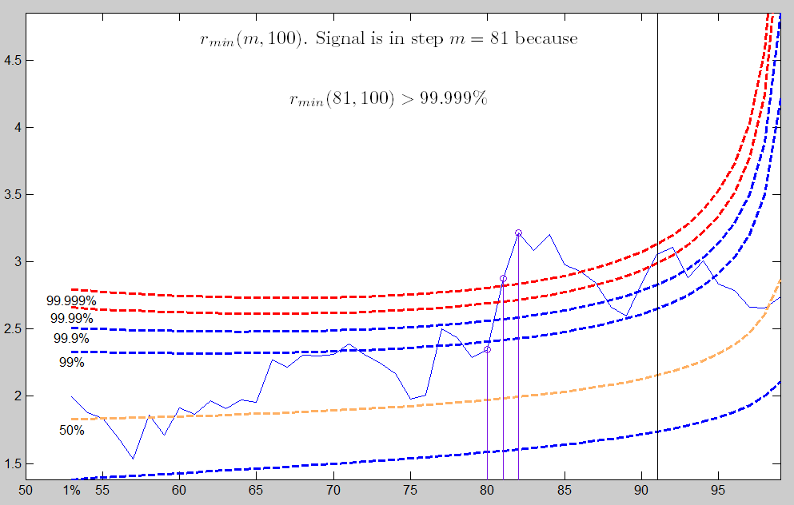
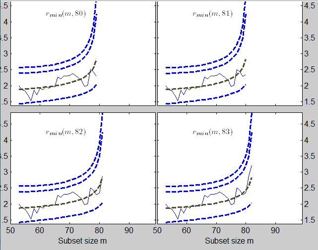
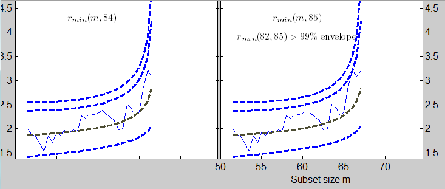
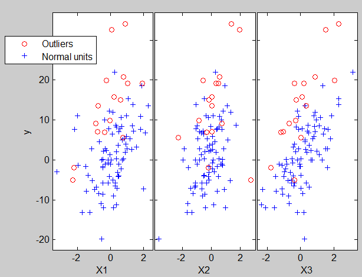
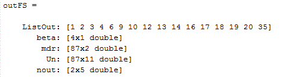
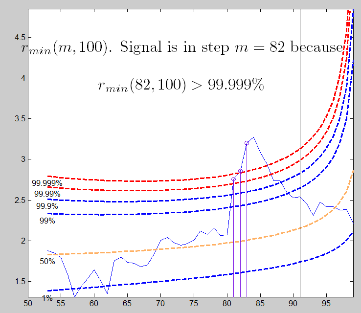
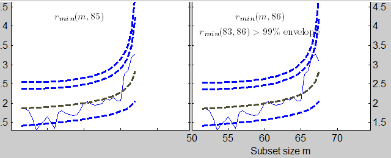
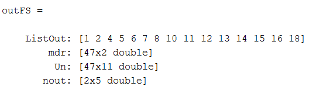

| Flexible Statistics Data Analysis Toolbox™ | |
Automatic Outlier Detection Procedure based on Forward Search Estimator
[out] = FSR(y,X)
[out] =
FSR(y,X,param1,val1,param2,val2,...)
FSR(y,X) gives in structure out a set of units which can be considered atypical. To detect outliers all methods compare selected residuals with a threshold. We examine the minimum deletion residual (rmin) among observations that are not in the subset (say of size m). If this ordered observation [m+1] is an outlier relative to the other m observations, this residual will be "large" compared with the maximum residual of observations in the subset. In uncalibrated use of the minimum deletion residual to detect outliers the decision whether a difference in distances is "large" is subjective, without reference to any null distribution. To calibrate the forward search and so to provide an objective basis for decisions about the number of outliers in a sample we have found the distribution of the minimum deletion residual in the forward search. The output is a series of theoretical simultaneous confidence bands (envelopes) associated to the quantiles of the distribution of the minimum deletion residual. Finally we have tried to calibrate the complete search in order to provide an outlier test of ascertainable properties.
To use the envelopes in the forward search for outlier detection we accordingly propose a two-stage process. In the first stage we run a search on the data, monitoring the bounds for all n observations until we obtain a "signal" indicating that observation m† therefore succeeding observations, may be outliers, because the value of the statistic lies beyond our threshold. In the second part we superimpose envelopes for values of n from this point until the first time that we introduce an observation we recognize as an outlier. The envelopes of minimum deletion residual outside subset consist roughly of two parts; a flat "central" part and a steeply curving "final" part. Our procedure FSR for the detection of a signal takes account of these two parts.
Because we potentially make many comparisons, one for each value of m, the form of our threshold needs to allow for simultaneity, so that we have a test with size α for the presence of at least one outlier. In order to keep into account simultaneity we envisage four conditions, the fulfillment of any one of which leads to the detection of a signal.
In the central part of the search we require 3 consecutive values of (m,n)
above the 99.99% envelope or 1 above 99.999%;
In the final part of the search we need two consecutive values of
rmin(m,n) above 99.9% and 1 above 99%;
rmin(n-2,n)>99.9% envelope;
rmin(n-1,n)>99% envelope. In this last case a single
outlier is detected and the procedure terminates.
The final part of the search is defined as: m >= n-[ 13,(n/200)0.5],
Once a signal has been found we start superimposing 99% envelopes taking n*=m†-1, m†, m†+1, ... until the final, penultimate or antepenultimate value are above the 99% threshold or, alternatively, we have a value of rmin(m,n*) for any m>m† which is greater than the 99.9% threshold.
y is a vector of length n containing the response values, while X is the n-by-p-1 matrix which contains (in the columns) the values of p-1 predictive terms
[out] = FSR(y,X) returns the following information
ListOut − k-by-1 vector containing the list of the units declared as outliers or NaN if the sample is considered homogeneous
mdr − n-init-by-2 matrix.
1st col = fwd search index
2nd col = value of minimum deletion residual in each step of the fwd
search
Un − (n-init)-by-11 matrix which contains the
unit(s) included in the subset at each step of the fwd search.
REMARK: in every step the new subset is compared with the old subset.
Un contains the unit(s) present in the new subset but not in the old
one.
Un(1,2) for example contains the unit included in step init+1.
Un(end,2) contains the units included in the final step of the
search.
nout − 2 x 5 matrix containing the number of times
observed minimum deletion residual went out of particular quantiles.
First row contains quantiles 1%, 99%, 99.9%, 99.99% and 99.999%.
Second row contains the counts of the exceedances
[out] = FSR(y,X,param1,val1,param2,val2,...) specifies one or more of the name/value pairs described in the following table.
| Parameter | Value |
|---|---|
| 'intercept' | If 1, a model with constant term will be fitted (default) else no constant term will be included. |
| 'h' | The number of observations that have determined the least trimmed squares estimator. h generally is an integer greater or equal than [(n+size(X,2)+1)/2] but smaller then n. |
| 'nsamp' | Number of subsamples which will be extracted to find the robust estimator. If nsamp=0 all subsets will be extracted. They will be (n choose p). Remark: if the number of all possible subset is smaller than 1000 the default is to extract all subsets otherwise just 1000. |
| 'lms' | Scalar or structure. If lms is a scalar
= 1 (default) Least Median of Squares is computed, |
| 'plots' | Scalar. If plots=1 (default) the plot of minimum
deletion residual with envelopes based on n observations and the
scatterplot matrix with the outliers highlighted is produced. |
| 'init' | Scalar which specifies the initial subset size
to start monitoring exceedances, if init is not specified it will be
set equal to |
| 'exact' | Scalar, if it is equal to 1 the calculation of
the quantiles of the T and F distribution is based on functions
finv and tinv from the Matlab statistics toolbox,
else the calculations of the former quantiles is based on functions
invcdff and invcdft. The solution has a tolerance of
1e-8 (change variable tol in files invcdff.m and invcdft.m if
required). |
| 'nocheck' | Scalar. If nocheck is equal to 1 no check is performed on matrix y and matrix X. Notice that y and X are left unchanged. In other words the additional column of ones for the intercept is not added. As default nocheck=0. |
| 'bivarfit' | This option adds one or more least square lines, based on SIMPLE REGRESSION of y on Xi, to the plots of y|Xi. bivarfit= '' is the default: no line is fitted. |
| 'multivarfit' | This option adds one or more least square lines, based on MULTIVARIATE REGRESSION of y on X, to the plots of y|Xi. multivarfit= '' is the default: no line is fitted. |
| 'labeladd' | If this option is '1', we label the outliers with the unit row index in matrices X and y. The default value is labeladd='', i.e. no label is added. |
| 'nameX' | Cell array of strings of length p containing the labels of the variables of the regression dataset. If it is empty (default) the sequence X1, ..., Xp will be created automatically |
| 'namey' | Character containing the label of the response. |
| 'ylim' | Vector with two elements controlling minimum and maximum on the y axis. Default value is '' (automatic scale) |
| 'xlim' | Vector with two elements controlling minimum and maximum on the x axis. Default value is '' (automatic scale) |
| 'bonflev' | option to be used if the distribution of the
data is strongly non normal and, thus, the general signal detection
rule based on consecutive exceedances cannot be used. In this case
bonflev can be: |
| 'msg' | Scalar which controls whether to display or not messages on the screen If msg=1 (default) messages are displayed on the screen about step in which signal took place and .... else no message is displayed on the screen |
state=100;
randn('state', state);
n=100;
X=randn(n,3);
bet=[3;4;5];
y=3*randn(n,1)+X*bet;
y(1:20)=y(1:20)+13;
[outFS]=FSR(y,X,'plots',2);
The envelopes based on all the observations show that in the central part of
the search the observed curve is well beyond the extreme thresholds. More
precisely, the message inside the graph informs that the signal took place in
step 81 because the value of minimum deletion residual in this step was greater
than 99.999% threshold.

Once a signal takes place the envelopes are resuperimposed until a stopping rule is fulfilled.

The procedure of resuperimposing envelopes in this case stops when n = 85, the first time in which we have a value of rmin(m) for n>=m†-1 greater than the 99% threshold. The group can therefore be considered as homogeneous up to when we include 84 units.
The below shows the final classification obtained by the forward search. The units identified as outliers are shown in red circles. 
Figure below shows that among the 16 units declared as outliers belong to the 20 units which had been previously contaminated.

If in the previous code we change the seed to 543 (state=543) we obtain the following results:
 

In this second example 15 of the 20 units previously contaminated are declared as outliers.

If you wish to compare the output which comes out from the application of the forward search estimator with that which comes from the application of traditional robust estimators, please see page lxs.html.
| |
fsmtra.html | fsraddt.html | |